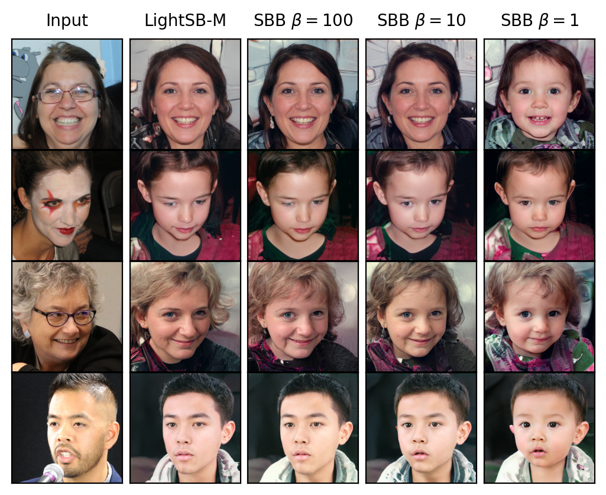

Research

I develop mathematical and statistical foundations for learning and generating stochastic systems from dependent data.
My work combines finite-sample statistical guarantees, transport and control formulations for stochastic generative models, and analytical and computational methods for reliable scientific machine learning. It is organized around three connected themes.
My current research programme develops mathematical foundations for Schrödinger–Bass transport in synthetic financial time-series generation, including multi-marginal extensions, convergence and stability of training schemes, and statistical error propagation.
Statistical foundations of generative stochastic models

I study statistical questions arising when stochastic dynamics must be learned from dependent observations and time-series data. The emphasis is on finite-sample guarantees, asymptotic distributions, adaptive procedures, minimax behaviour, and the influence of temporal dependence on the reliability of learned generative mechanisms.
Optimal transport and stochastic control

I use variational, transport, and control formulations to design and analyse stochastic bridges between probability laws. These formulations connect generative diffusion models with semimartingale optimal transport, controlled drift and volatility, duality, and stochastic interpolation.
PDE analysis and computational methods

I investigate the analytical structure and numerical realization of stochastic generative and control problems. PDE representations, transforms, numerical approximation, and computational diagnostics are used together to derive, analyse, and test reliable methods.
Connecting the themes
Statistical guarantees describe what can be recovered from data, transport and control identify the stochastic mechanisms to be learned, and PDE and computational methods provide analytical and numerical access to those mechanisms.